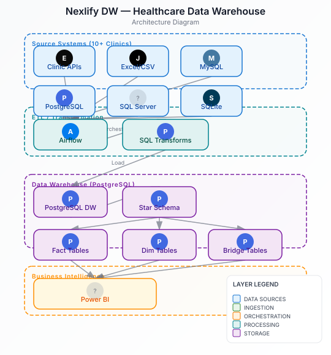

Key Metrics
The Problem
A healthcare client of Nexlify operated 10+ clinics with disparate data systems— Excel sheets, clinic management APIs, and various database engines. Each clinic maintained its own data silos, making company-wide reporting impossible and executive decision-making slow and fragmented.
The existing reporting infrastructure couldn't handle the growing data volume or provide unified views across clinics. Dashboard timeouts were frequent, and data quality issues were rampant due to inconsistent formats across sources. Nexlify was engaged to design and build a centralized data solution.
Architecture
Hover or tap any component to see details

Implementation
- Data Warehouse Design: Built a centralized warehouse from scratch using dimensional modeling with star schemas, fact tables, dimension tables, and bridge tables to resolve many-to-many relationships between staff and roles.
- ETL Pipeline: Engineered an Airflow-based pipeline to ingest data from heterogeneous sources—Excel sheets, CSV files, and clinic system APIs—covering customers, staff, revenue, orders, schedules, and appointments.
- Schema Evolution: Adapted the star/snowflake schema design as requirements evolved across Medical, IoT, and Fintech domains within the clinic network.
- Data Quality: Cleaned and standardized millions of historical records using custom Python scripts, handling mixed Arabic/English text and numeric formats, enforcing data quality checks before loading.
- SQL Optimization: Refactored legacy pipelines using CTEs and optimized JOIN logic across PostgreSQL, SQL Server, MySQL, and SQLite.
- Analytics Layer: Built Power BI reports with a clinic-wise switcher so a single report model served every clinic and company-wide views.
Challenges & Solutions
Challenge: Heterogeneous Data Formats
Each clinic used different database systems and data formats, with inconsistent column names and structures.
Solution: Standardized Staging Layer
Created a staging layer with unified schema definitions and mapping rules. Built custom Python transformation scripts to normalize data types, handle mixed Arabic/English text, and enforce consistent naming conventions.
Challenge: Many-to-Many Staff Relationships
Staff members could hold multiple roles across different clinics, creating complex relationship mapping challenges.
Solution: Bridge Tables
Implemented junction (bridge) tables to properly model the many-to-many relationships between staff, roles, and clinics, ensuring accurate attribution in downstream reporting.
Challenge: Dashboard Timeouts
Legacy SQL queries were timing out under increased data volume, blocking executive reporting.
Solution: Query Optimization
Refactored legacy SQL using CTEs, optimized JOIN logic, and added proper indexing. Achieved 30% reduction in query latency and eliminated 100% of dashboard timeouts.
Outcome
The centralized data warehouse transformed Nexlify's reporting capabilities. Executive reporting cycles accelerated by 40%, and the unified view across 10+ clinics enabled data-driven decisions at the company level for the first time.
The modular architecture allows seamless addition of new clinic sources, and the Power BI reporting layer provides flexible analytics for stakeholders.